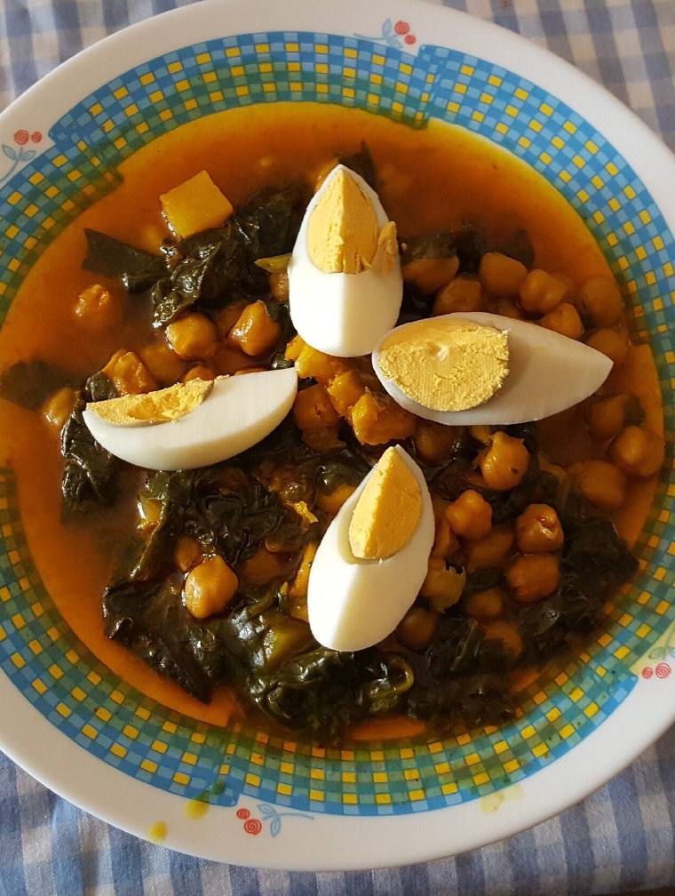

Cuisine espagnole

Cuisine espagnole
Potaje de garbanzos con espinacas
Potée de pois chiches aux épinards
Préparation : 20 min
Repos : 12 h
Cuisson : 2 h 15
Ingrédients (pour 6 personnes)
- 500 g de pois chiches secs
- 250 g d’épinards
- 150 g de carottes
- 2 oignons
- 1 tomate
- 2 œufs durs
- 10 cl d’huile d’olive
- 3 gousses d’ail
- 1 feuille de laurier
- persil, sel, poivre
Quantités adaptées. Les temps de cuisson ne sont pas recalculés.
- La veille, faire tremper les pois chiches.
- Les porter à ébullition, écumer, ajouter un peu d’huile, un oignon, carottes, deux tiers de l’ail, laurier et persil. Cuire jusqu’à tendreté.
- Cuire les épinards à part, égoutter, hacher, ajouter.
- Mixer l’oignon, les carottes et une louche de pois chiches, remettre dans la marmite.
- Revenir le reste d’oignon et d’ail, persil, poivre et tomate, délayer de bouillon et verser.
- Saler, servir parsemé d’œuf dur.
D’après Spain.info, office espagnol du tourisme. Traduit et reformulé.